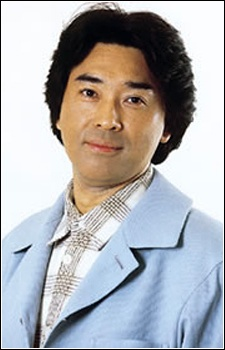

Miyako Endo is a Japanese voice actress. She is affiliated with Aoni Production. She graduated from Aoyama Gakuin University.
- Gender: Female
- Birthday: March 21, 1965
| |
Miyako Endo is a Japanese voice actress. She is affiliated with Aoni Production. She graduated from Aoyama Gakuin University.
|
 |
|---|
 |
Hiromi Matsuno | Sailor Moon | Hiromi Matsuno is animator who works on the Sailor V anime. She is best friends with Kazuko Tadashita. |